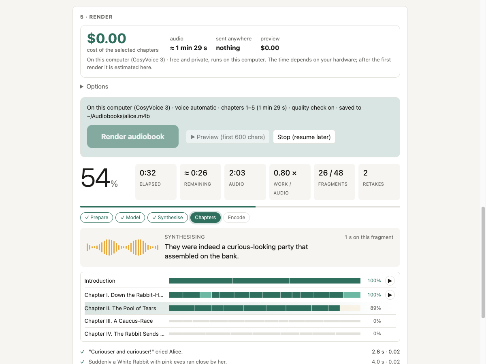
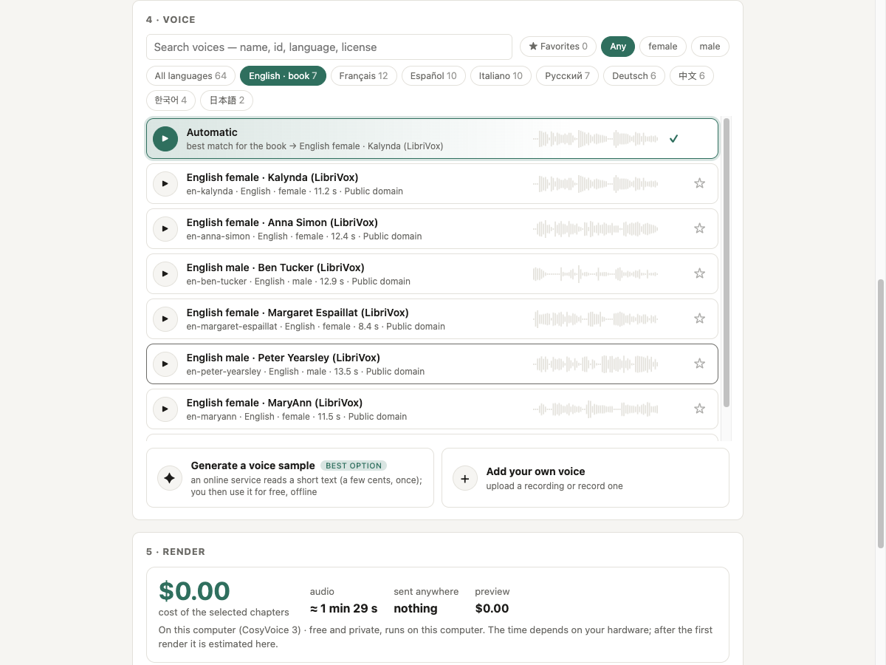
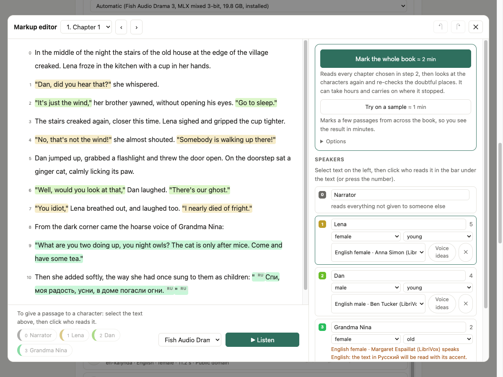

Turn any e-book into an audiobook.
Free, on your own computer.
Drop in a book, pick a voice, press Render. Get a chaptered audiobook read in any voice you like. No account, no subscription, nothing uploaded.
FB2 · EPUB · DOCX · PDF · TXT → .m4b / .mp3 with chapters, cover and metadata

Built for whole books
Folivox turns many hours of text into a finished audiobook and keeps going if something goes wrong.
Clone any voice
CosyVoice 3 clones a narrator from a 6–15 second sample: a bundled voice, your own recording, a clip cut from a video, or a voice designed for the book.
Real audiobook files
One .m4b with chapter markers, cover and metadata, or one .mp3 per chapter. Loudness-normalised.
Checked by a listener
Every fragment is listened back with Whisper. If it does not match the text, it is read again and the best take is kept.
Crash-safe
Every finished fragment is journalled. Stop, crash or lose power, run again and it continues where it stopped.
Text prepared for speech
Numbers, dates, money, units and abbreviations are read in full for Russian, English, German, French, Spanish, Italian, Chinese, Japanese and Korean.
Runs on what you have
Apple Silicon, NVIDIA CUDA or a plain CPU. Studio in the browser (local only) or the folivox command line.
Install
One command, no administrator rights. It sets up everything: uv, ffmpeg, the PyTorch build for your hardware, and Folivox. Models (about 6 GB for the voice and 1.6 GB for the quality check) download with a progress bar.
Install
macOS and Linux
curl -fsSL https://raw.githubusercontent.com/vatavale/folivox/main/scripts/install.sh | bash
Windows (PowerShell)
irm https://raw.githubusercontent.com/vatavale/folivox/main/scripts/install.ps1 | iex
Prefer Docker for a home server or NAS? See the Docker guide.
Start the studio
Open a new terminal window and run:
folivox ui
Your browser opens the studio. Drop a book, choose a voice, press Render audiobook.
Or use the command line
folivox render book.epub
The audiobook appears next to the book. Update later with folivox update.
Choose how your book is read
Local and free by default. Online engines are optional and use your own API key.
| Free, on your computer | Online engine (your API key) | |
|---|---|---|
| Who reads | CosyVoice 3 or Fish Audio Drama 3, local and offline | ElevenLabs, OpenAI, Gemini, Cartesia or Fish Audio |
| Voice | Clones any sample; several voices in one book | The provider's voices, or a voice designed for the book |
| Cost | Free | Estimated before you start, with an optional spending cap |
| Your text | Never leaves your computer | Sent to that provider |
Details and prices: cloud engines · voices · how it works.
Take a look

